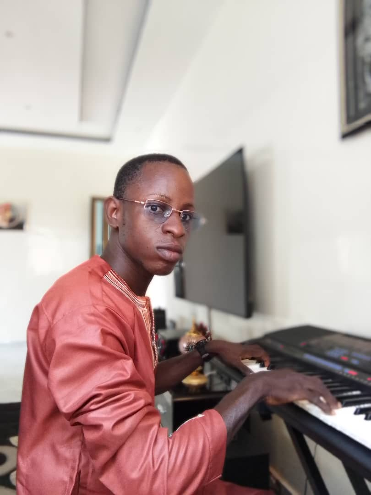

STUDIO GMO • PARAKOU
Un studio au service de tous.
Enregistrement de sons et production de vidéos pour les artistes nationaux et internationaux, les groupes et chorales, et toute catégorie de personne.
♪
Production & accompagnement
Le Studio GMO, au siège de l’ONG à Parakou, accompagne artistes et chorales dans leurs projets audio et vidéo.
ArrangeurBenjamin
Contacter le studio
ArrangeurTimothée+229 01 66 22 02 38 · +229 01 65 71 74 66
Artistes internationaux
BABA SADOU CamerounSANDA LASSA CamerounSANDA BORO CamerounHAIDAR SK Nigéria
Chorales & groupes
SINAGOUROU,KARO,GROUPE MUSICAL Emmanuyiila,GARAROU,TISSAROU,BOUKOUSSERA,GROUPE ELISSA,GBABI GAH,TEKPAROU,KINNOU-KPANOU,TOUKPEROU,BETHELEHEM,DOKPAROU,KOUKIRI,WORE,GROUPE KORE